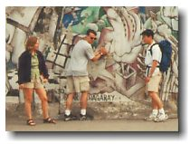

Berlin, Germany

|
Berlin, Germany
|
|
"All free men, wherever they may live, are citizens of Berlin. And therefore, as a free man, I take pride in the words: Ich bin ein Berliner (I am a donut)" - John F. Kennedy, June 26th, 1963. Trip #1: Saturday May 22 - Monday May 24, 1999 We left early Saturday morning for our 3 day weekend trip to Berlin. The travelling group consisted of some of the other Canadians working in Hannover (Ryan, Ben, Paul, Karyn, Keith, and myself), as well as friends from Vancouver who stopped by Hannover during their European travel (Andrea and Stacey). At 7:05, we were on the first of 5 slow trains to Berlin. No sooner than 5 hours later, we were in Berlin. I guess that's what budget travelling is all about. With the help of my Let’s Go Germany, as well as Ben’s Lonely Planet Germany, we saw a lot in 3 days and still got to relax at Berlin’s beach for a few hours on the last day. I bet you didn’t know Berlin had a beach… Our first destination was Potsdamer Platz. This site was part of the former East, and is currently undergoing the largest construction in the world. We counted 49 cranes in total. In the future, this area will be home to a Sony building, IBM building, and the likes. I climbed the Infobox (some 20 meters or so) to get a better view. Nothing spectacular, but it was worth a picture or two. Walking distance away from Potsdamer Platz was Brandenburg Gate. Although the Wall on both sides of this gate has been torn down, the gate has been preserved and is now the most famous part of the Berlin Wall.
There’s a 2 floor public bus (#100) that comes about every 2 min. and rides along the main street of Berlin ("Strasse des 17 Juni" on the former West Side and "Unter Den Linden" on the former East Side). This street is where many attractions are, so we decided to ride the bus back and forth. To clear our minds, most of us fell asleep while on board, including yours truly. That was enough touristy stuff for the day. The rest of the day was filled with eating and drinking. The next day was an exhausting one. Andrea and Stacey's eagerness to see everything before they left Berlin early the next morning was the driving force for us to see everything and anything in one day (not recommended). The day started by spending several hours at Schloss Charlottenburg. This palace, which is also a museum, park, garden, cemetary, exhibit, and everything else short of an amusement park, was built by King Friedrich, the ruler of Berlin in the 18th century. There's a little taste of Versaille there. The next stop was Checkpoint Charlie, which is an exhibit for the Wall. (A must see if you're in Berlin). The exhibit showed the history behind the wall, the protests, the way people escaped, and what happened to people who got caught escaping. If you're ever there, check out the car that a fellow by the name of Johannes Ehret used to smuggle his girlfriend across the border in 1988. He cut out a portion of the passenger seat so that she can become part of the seat. She and the seat were covered with a black towel. Pretty clever. After seeing the Wall exhibit, what would be a better way to compliment the day than to see the longest stretch of the Wall that remains. So off we went. Had a little difficulty, but we eventually found the 1.3 km long Wall. And since we went all that way, we thought we deserved pieces of the Wall. So, out came Stacey’s Swiss Army Knife and Ryan’s knuckles. We each got a small piece. And we didn’t even have to pay the hundreds of dollars that stores were charging. Oh, I saw one of the things that I really wanted to see. A Trabant. When East Germany was a communist country, it was the only car that the East Germans could buy. The waiting list for these puppies was 10 years, and if you had a bad record with the GDR (German Democratic Republic, the former government of East Germany) then you weren’t qualified to get one. For all the years, this was the only car that East Germans could buy. And what a piece of crap it is. Another reason why East Germans wanted out. On the way to finding a place to have dinner, we noticed a large Market/Carnival going on. We quickly hoped off the train and checked it out. It was crowded and similar to the ones in Vancouver. Our last stop of the day was Kreuzberg, which is just South-East of Berlin. It is known as the alternative scene of Berlin. If we didn’t fit in in the center of Berlin, we were outcasts here. Dirty, smelly, and weird people. Monday was our last and most relaxing day. A perfect closure. We started off by climbing the Victory Column which is located on "Strasse des 17 Juni". At the top, we got a nice view of the city. To summarize Berlin, the west side is a bit commercial looking, and the east side is nothing but construction. And boy, Berlin sure is ugly. Good thing we didn’t go there for its beauty. The rest of the day was spent in Wannsee. It's at the outskirts of Berlin and is where a lake and beach belongs. Who knew we would have to pay to go to a beach, but it was all worth it. The weather was great and the place was packed. I even fell asleep while catching some rays. |
|
That’s it. Off to the main train station and back to Hannover we went. |
 Next stop, Reichtag (parliament building). This is where the Government of Germany will move in later this year. The interior has been completely redone, and from what I saw from the outside, it looked really nice. Public entrance to the building was not allowed until May 25th. Perfectly set for the day after we leave.
Next stop, Reichtag (parliament building). This is where the Government of Germany will move in later this year. The interior has been completely redone, and from what I saw from the outside, it looked really nice. Public entrance to the building was not allowed until May 25th. Perfectly set for the day after we leave. johnnyo@canada.com
johnnyo@canada.com